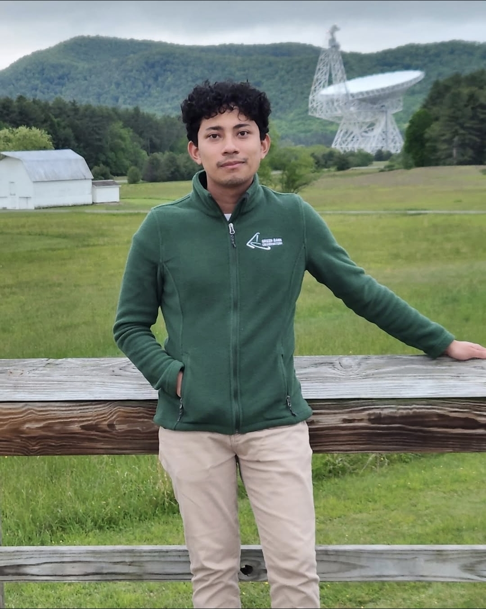

Isac Lainez
Physicist
University of Puerto Rico
isac.lainez@upr.edu

who is this?
Hello there! My name is Isac Lainez. I’m a second-year Physics Master’s student at the University of Puerto Rico, Mayagüez Campus, where I spend most of my time chasing questions about the universe (and occasionally chasing coffee to survive the process). I was born and raised in Tegucigalpa, Honduras, and somehow ended up looking at stars, studying physics, and wondering how the universe manages to be both incredibly simple and ridiculously complicated. When I’m not buried under equations, code, or scientific papers, you’ll probably find me reading, watching movies, exploring the outdoors, hiking, or pretending I know where the trail is going. If you’d like to talk about science, the cosmos, books, movies, or just say hello, feel free to visit my contact page!
"The nitrogen in our DNA, the calcium in our teeth, the iron in our blood, the carbon in our apple pies were made in the interiors of collapsing stars. We are made of starstuff." — Carl Sagan, Cosmos
what is this site?
A small corner of the internet that's actually mine, a place for professional stuff, a running blog, and whatever else feels worth keeping. The directory to the left has everything else.